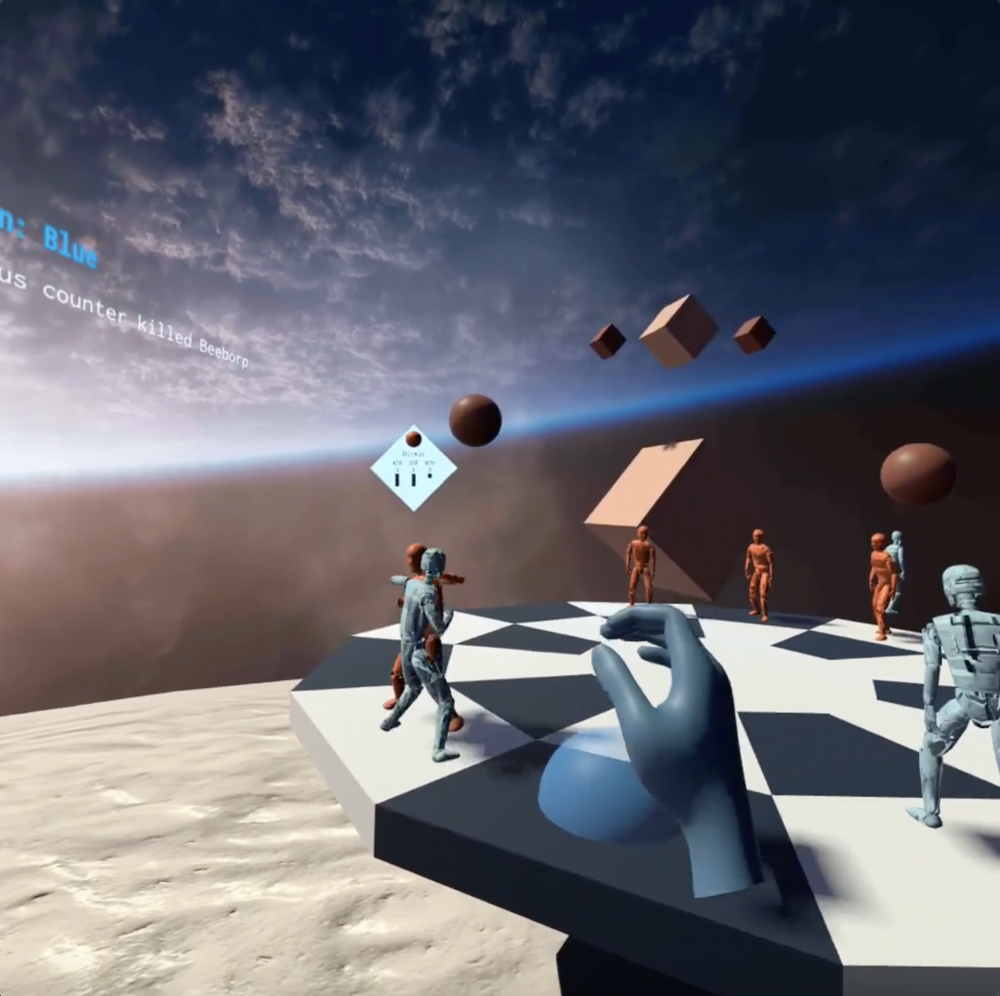
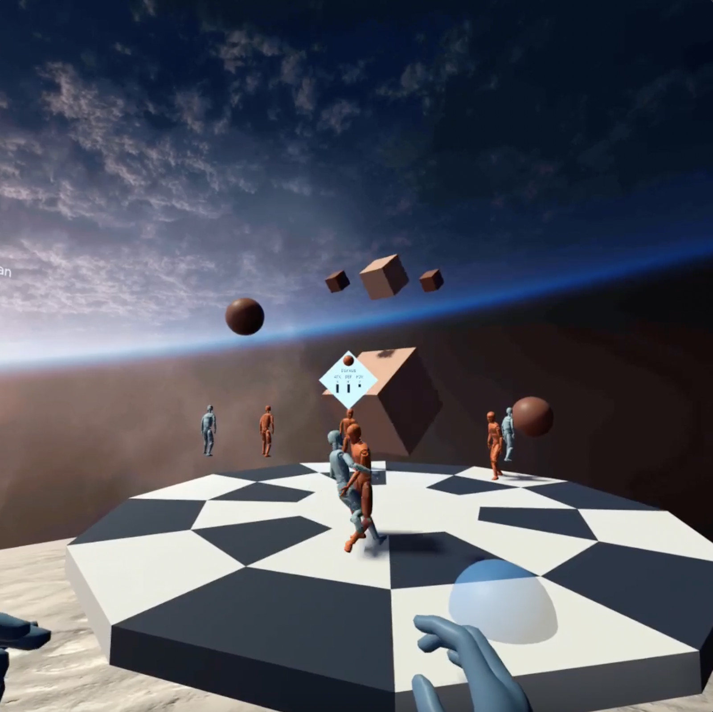
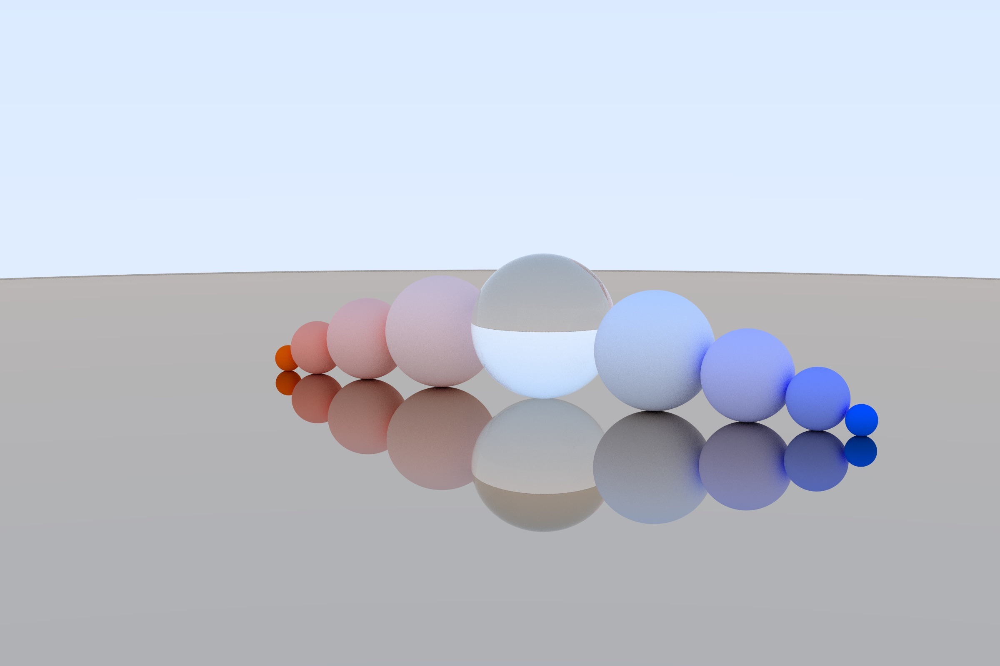

Hello! Welcome to my website. I first built this site so that others could learn more about me,
but I also like to keep it as a personal record of what I've made over the years.
Before I let you look at my work since highschool, first let me introduce myself.
I'm Lea Broudo, a software engineer and artist from New York. I've worked on a range of projects,
most of which I've included on this site.
Here's a brief timeline of the different areas I've explored over the years:
portrait art
2014-16
I was interested in being able to capture people's likeness,
so during this time I taught myself to draw portraits. I mainly used colored pencils on toned tan paper.
You can check out some of my work here.
surrealism, embroidery, & pottery
2016-18
After portraits, I began to
work on larger and more surreal scenes. I also branched off into other mediums like
embroidery and pottery. You can check out some of my work here.
mechanical engineering
2017-19
At the beginning of University, I was a mechanical engineering major. During that time, I enjoyed designing parts
in SolidWorks and either 3D printing or laser-cutting the final form. Some of my most complete builds from then include
an experiment that went into microgravity and a portable Dance Dance Revolution machine. You can check them out
here.
computer graphics development
2019-20
After a few years, I missed the artistic aspect of my work that I felt mechanical engineering lacked. I jumped ship
and became a computer science major with a focus on computer graphics and vision. Around then I worked
on different shaders, a ray tracer, and custom Maya object generation tools. Check my work out
here.
software engineering & XR development
2020-present
I joined the Computer Graphics and User Interfaces lab under Professor Steven Feiner,
and have been obsessed with AR & VR development ever since. While there I worked mainly on a
collaborative urban virtual environment using SteamVR. Since then I've been working on
my own Oculus Quest game, Holo Brawl, through the Oculus Start Program. You can view some of my projects
here.
Otherwise, I'm currently working at Zocdoc as a software engineer
on the Video Visits and Intake team. If you're in the market for a new doctor, I highly recommend you visit them!
projects
.
*
These are the projects I've worked on since 2017. They are ordered (for the most part) from newest to oldest.
The latest projects are all AR and VR related and built in Unity. Before then, I worked on some GLSL shaders and a ray tracer,
as well as some Python tools I wrote for Maya to help generate different 3D models. My oldest projects are from when I was still
a mechanical engineering major in college, and include a portable Dance Dance Revolution machine and an experiment that went into microgravity.
x
Modal Header
HoloBrawl is a VR board game where players can personally interact with their pieces.
Pieces squirm when picked up, and have personalities of their own! The objective of the game
is to kill all of your AI opponent’s pieces before they kill yours.
Players must move their
piece to an opponent’s tile to attack them. Each piece has an attack and defense score, and
if the difference between the attacker’s attack score and the defense’s defense score is big
enough, with a bit of chance the attacker will kill the defense piece. Given different pairings
of these scores, pieces can also be counter-killed or pushed to a new tile.
I built this entirely in Unity using the OpenXR and Oculus SDK's. I used hand tracking as the primary
interaction mechanism so that the environment and feeling of placing pieces would seem more natural.
I also made many portions of the
user's world physics-based to aid in the realism. The game pieces were made using Pärtel Lang's PuppetMaster. This
allowed them to act as ragdolls when responding to user interaction, but be guided by animations otherwise.
I'm still working on this project as of June 2022, and was recently accepted to the Oculus Start Program
to help me continue development.
Using the game's user interface

Pieces punching eachother

Pieces fighting eachother
Player placing their piece to attack opponent
Player moving their piece
User Interface
Gameplay
I worked at Columbia University's Computer Graphics and User Interfaces (CGUI)
Lab on this project under Professor Steven Feiner and lead doctoral researchers.
The project, Collaborative Urban Virtual Environment (CURVE), is used for 3D urban data visualization
in VR.
I further developed the project in Unity using SteamVR, and build the pinboards and data placards in the images below.
The pinboards afford a number of different abilities, including the bookmarking of
different data placards, automatic organization of placards discretely or continuously, placard filtering according
to a numer of different criteria, and the tethering of nearby or similar placards.
I also migrated the code to use the Mapbox API, which allowed us to better research
the interactions of multiple users inside a virtual representation of NYC. In addition, I
implemented an exclusively desktop interface so that users without head-worn displays
could still use CURVE during the COVID-19 pandemic.
Multi-grabbing placards to place them on the pinboard
Discrete pinboard with Yelp, Twitter, and NYC 311 placards
Moving tethered placards around the Continuous pinboard
NYC map with Yelp, Twitter, and NYC 311 placards throughout
Study Environment
SineAR is an augmented reality app that allows users to learn about
acoustic waves by creating and modifying spatial audio ensembles. I developed
sineAR with two other classmates using Unity and Vuforia. With step-by-step
tutorials and multiple methods of interaction, users quickly and immersively
create sounds in their AR environment. Users experience how modifying frequency
and amplitude leads to an interesting new world of sound.
This is a ray tracer I wrote in C++ that uses BRDF calculations to render images,
and includes features like recursive reflections, depth of field, and shadows.

These are a number of GLSL shaders I implemented. They include: Phong, Gouraud, texture
modulation, normal mapping, a checkerboard pattern, cel (toon), and a fun rainbow shader!
Cel
Checker Texture
Gouraud
Normal
Phong
~Rainbow~
Cow
This is a plugin I wrote for Maya that allows users to create meshes of different types of insects.
These insects are created either randomly or according to user-specified input in a slider menu.
The tool was written in Python using the Maya API, and the final insects were rendered in Arnold.
In this project, I was interested in creating a Maya plugin that lets users
procedurally generate different types of trees. In order to generate trees that looked
realistic, I used procedural L-systems with stochastic sampling. Users can input
their own seeds to create even more varied trees, and they can also control
parameters like branch tapering, leaf and flower density, and mesh texturing.
The tool was written in Python using the Maya API, and the final trees were rendered in Arnold.
This is a character I modeled in Maya and textured in Substance Painter.
I dubbed the model "Walter", and was responsible for the concept and design. The character also
has a fully functional rig with both inverse and forward kinematic functionality for the arms, legs, and spine.
I also animated the walk cycle myself, and rendered the final scene in Arnold.
For this project, I wanted to create a tool that gave artists a realistic
figure model to use for sketching and illustration. I thought it was time
for an upgrade from those old-school wooden models, so Sketch Sage was born.
The UI was developed using plain JavaScript and HTML/CSS, and the graphics
were all made using Three.js. After the desktop and mobile versions were completed
in July 2019, the site gained over 1,500 active users in its first four months.
My friends and I built this Dance Dance Revolution hand-held game completely from scratch.
I used SolidWorks to design the container, and we laser-cut acrylic boards to create the physical shape.
We used an Arduino to power the game, so we wrote the logic in C++ and wired it up completely on our own.
It was suprisingly fun to play, but extremely difficult since players lose points if a button is hit
even a microsecond too late or early. But overall, it was a fun project to work on.
Winning the game!
Just starting the game...
You can click into it, we just used some copywrited songs!
Human spaceflight has been shown time and again to impose a variety of negative effects on the body.
Looking specifically at eye function, about 30% of astronauts on short-term flights and 60% on
long-duration missions to the ISS have reported impairment to their vision.
Building off previous
studies identifying cellular disorganization and deterioration after simulated microgravity,
this project aimed to further explore the effects of true short-term microgravity exposure on eye
tissue and retinal glial cells. The cells were exposed to microgravity
for several minutes during a Blue Origin New Shepard flight.
I helped design an automatic payload to house cultured cells and inject a solution of RNA stabilizing solution at two time-points immediately before and after microgravity exposure.
All parts were 3D printed in PLA except the outside shell which was aluminum sheet metal with CNC machined holes. Material was removed based upon topology simulations to produce highest strength to weight ratio.
Two linear actuators were used to push fluid into six cell cultures. These cell cultures were housed in a 3D printed container filled with aerogel to minimize heat loss from the system.
Holo Brawl VR
Oculus Quest board game using hand tracking.
I'm currently developing it further as part of the Oculus Start Program!
Collaborative Urban Virtual Environment (CURVE)
Collaborative exploration of urban data in virtual reality
using SteamVR.
SineAR
AR app that allows users to learn about and spatially play with acoustic waves.
Ray Tracer
Ray tracer written in C++.
Shaders
(Adorable) GLSL shaders.
Tree Generation
Maya plugin to quickly generate complex tree models.
Insect Garden
Maya plugin to easily generate a variety of insect models.
Walter Model & Rig
3D model, rig, and walk cycle created in Maya and rendered in Arnold.
Sketch Sage Studio
Realistic, poseable online figure model to use for sketching and illustration.
Human Spaceflight and Vision Empairment Poster
Retinal cell experiment sent into microgravity.
The Electric Slide
Hand-held Dance Dance Revolution game made with Arduino.
artwork
.
*
I drew between most of these portraits between 2014 and 2018.
I won the Congressional Art Award for the second piece below,
Head in the Clouds, which was displayed in the U.S. Capitol for a year.
The first piece in the Portraits section, A Waltz with the Cosmos,
and the first piece in the Surreal section, Remote (not in) Control,
were displayed in the Rubell Family Collection Gallery in Miami.